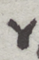
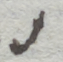
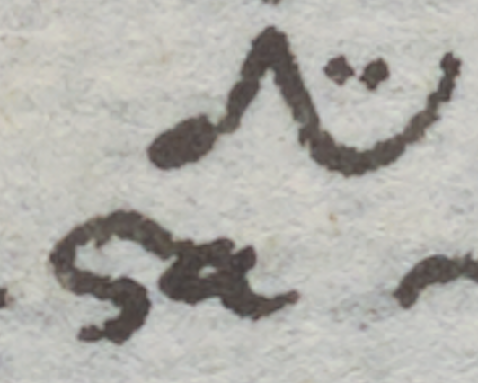
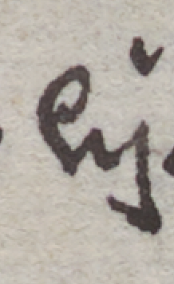
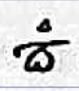

A Synthetic list of abbreviation phenomena in Agathemerus Manuscripts


| Image | Appearance | Identifier | Description | Type | Position | Value |
|---|---|---|---|---|---|---|
| Superscript Double Dash | abbr1 | Generally at the end of the word, formed by one or two separate signs. Often the second sign is the acute accent of the previous vowel. | Abbreviation sign | Superscript | ας, ᾶς (rare) | |
| Ligature between the final upper trait of ο and the upper left of υ | abbr2 | Formed by ligature between the two letters. This trait includes the circumflex accent. Same symbol is found, without accent or with separate trait indicating acute accent, in abbr6. | Abbreviation by ligature | Superscript (rarely inline) | οῦ | |
| Quick ligature resembling an upside-down ν | abbr3 | Generally at the end of the word. A separate line represents acute accent. The abbreviative sign can be more or less pointed. | Abbreviation by truncation | Superscript | ην, ὴν | |
| Superscript open lock | abbr4 | Generally at the end of the word. One separate stroke may include the accent. | Abbreviation by truncation | Superscript | αν, άν, ὰν | |
| Quick ligature resembling an upside-down ω | abbr5 | Generally at the end of the word to indicate genitive plural, formed by one sign | Abbreviation by truncation | Superscript | ῶν | |
|  | Ligature between the final upper trait of ο and the upper left of υ | abbr6 | Generally at the end of a word. Same type of ligature as abbr2, does not include accent in this form. | Abbreviation by ligature | Superscript (rarely inline) | ου |
|
Quick ligature of the characters forming καί, with tachygraphic function | tach1 | Tachygraphic sign, includes accent | Tachygraphy | Inline | καὶ, καί |
| Superscript hook | abbr8 | Typically at the end of the word, connected to the upper trait of the last previous character. | Abbreviation by truncation | Superscript | ῆς, ης | |
| Quick curved sign orientated to the right, with two dots above | tach2 | Tachygraphic sign, includes accent | Tachygraphy | Inline | δὲ, δέ | |
|  | Short superscript dash | abbr10 | Typically at the end of a word to express accusative singular. | Abbreviation by truncation | Superscript | ον |
|
Compendium formed by the letters π ρ and ο | tach3 | Compendium, formed by truncation of the ending part of the word. Typically for the πρός adposition. | Compendium by truncation | Inline and superscript | πρός, πρὸς |
| Ligature formed by the last right trait of ω and the first bottom trait of ς | abbr11 | Conventional sign for abbreviation, typically at the end of a word. Can include an additional sign for the accent. | Abbreviation by ligature | Superscript or inline | ως, εως | |
| Two letters written with quick ductus and distorted in the shape | abbr12 | Typically at the end of a word. May include an additional sign for accent. | Abbreviation by ligature | Superscript | ων | |
| Tachygraphic sign, formed by the initial letter and a superscript ligature between ε and ν | tach4 | Frequent in quick scripts and marginalia. A separate line indicates the acute accent. | Tachygraphy or Compendium | Inline and superscript | μέν, μὲν | |
| Vertical double dash | abbr13 | Abbreviation formed by two parallel, diagonal signs, including the accent. At the end of the word. | Abbreviation by truncation | Superscript | ον, ὸν, όν / ειν | |
| Compendium, formed by the first two characters of the word and a set of abbreviation signs | tach5 | abbr13 is used at the end of the word. | Compendium | Inline and superscript | ποταμόν, ποταμὸν | |
| Quick curved sign orientated to the right, with two dots above | abbr14 | Same structure as tach2, with no accent. It is found superscript on the last character of the word, not inline. | Abbreviation by truncation | Superscript | ες | |
| Upside-down V | symb1 | Conventional sign for addition, often underline in correspondence of the space between two words, where the addition should be made. Added characters are often superscript. | Symbol | Superscript or Subscript | v | |
| Clover | symb4 | Conventional catch-sign for addition, usually with a corresponding symbol in the margin. | Symbol | Superscript or Subscript | .˙. | |
| Ligature between the upper trait of ι and the first upper trait of ν, with two dots above | abbr15 | Typically at the end of a word. | Abbreviation by ligature | Superscript | ιν | |
| Superscript τ with protracted right trait | abbr16 | The final upper right of the tau condenses the final two characters. Generally at the end of a word. | Abbreviation by truncation | Supraline and inline | ται | |
| Quick ligature between the final upper trait of ο, and the initial upper trait of υ and ν | abbr17 | Abbreviation by ligature of three characters. Includes accent | Abbreviation by ligature | Superscript and inline | ους, ούς, οὺς | |
| Contracted word written in quick ductus | tach6 | Tachygraphy formed by a set of abbreviations and ligatures. Includes accent as a separate sign. | Tachygraphy | Inline and superscript | κατὰ, κατά | |
| Ligature of the upper part of ε and ρ | abbr18 | Normally inside a word. | Abbreviation by ligature | Inline | ερ | |
| Upside-down hook | abbr19 | Abbreviation made of one single sign, often at the end of the word. | Abbreviation | Inline | ον | |
| Compendium formed by contraction and an abbreviative sign | tach7 | abbr6 is used in this compendium. See also tach5, of which this is the genitive form. | Compendium | Inline and superscript | ποταμοῦ | |
| Contracted word with quick ligatures | tach8 | Tachygraphy formed by a set of abbreviations and ligatures. Includes accent as a separate sign. See also tach12. | Tachygraphy | Inline and superscript | μετά, μετὰ | |
| Truncated word | abbr20 | Last letter is omitted. Accent is included as a separate sign. | Abbreviation by truncation | Superscript | ον, όν, ὸν | |
|  | Truncated word with last letter superscript and two dots above | abbr21 | This is not strictly an abbreviation, but a convention very often used in manuscripts with geographical content. | Abbreviation by truncation | Inline and superscript | στάδια |
| Symbol resembling a ψ, or cross with curved horizontal trait | symb2 | Conventional sign for separation. Equivalent to the ((crux)) often found in inscriptions. | Symbol | Inline | + | |
| Truncated word | abbr22 | Truncation is indicated by the superscript last character. Always at the end of a word. | Abbreviation by truncation | Superscript | ός, ὸς | |
| Small superscript v | abbr23 | May include acute accent. Generally at the end of a word | Abbreviation | Superscript | ής, ὴς | |
| Small superscript sign, resembling a curly bracket | abbr25 | May include accent as a separate symbol. Generally at the end of a word. | Abbreviation | Superscript | εν | |
| Small superscript v | tach9 | Tachygraphic sign, resembling abbr23 very much. Includes grave or acute accent. Mostly inline, sometimes smaller than the other characters. | Tachygraphy | Inline | καί, καὶ | |
| Superscript curved trait | abbr26 | May include accent. | Abbreviation | Superscript | ῶν, ων | |
| Quick ligature formed by a simplified version of ο, connected with ι and the first upper trait of ς | abbr27 | Often at the end of the word | Abbreviation | Superscript | οις | |
| Upside down pointy hook | abbr28 | Abbreviation | Superscript | αν | ||
| Oblique upper long dash | abbr29 | Often at the end of the word. It is particularly difficult to spot due to its ambiguity, needs context to be deciphered. It can be found inline, in the shape of a longer I, and inclined in the opposite direction (abbr10). Often combined with extended sign of circumflex accent. | Abbreviation | Superscript (rarely inline) | ον | |
| First letters of the word with an abbreviation in the end | abbr30 | Compendium formed by abbr26 and acute accent. Not strictly an abbreviation, see also abbr21. | Compendium by truncation | Superscript and inline | σταδίων | |
| Ligature between the last lower trait of ε and the first upper trait of κ | abbr24 | Generally includes breathing. | Ligature | Superscript and inline | ἐκ, ἑκ | |
| Set of traits resembling a bell | symb3 | Graphic symbol placed on the upper side of the letter λ, in the shape of a small bell. Very large intraline and in the margin. | Symbol | Superscript and intraline | ιων | |
|
Ligature between three different characters, starting from the lower last trait of ε | tach11 | Reference: Vatopedi 655, from f. 3v. | Tachygraphy | Inline | ἐπὶ, ἐπί |
| Ligature between the last upper trait of μ and the last two letters | tach12 | Typically appears with other superscript abbreviations or characters. | Abbreviation or tachygraphy | Inline | μεν-, μέν- | |
| Ligature between the last lower trait of ε and the first upper trait of ρ | abbr31 | Generally in περί- compounds. Cf. abbr7, with different palaeographical traits. | Abbreviation by ligature | Superscript and inline | ερ, (π)ερ | |
| Ligature between upper trait of ε and ν | abbr33 | Ligature | Superscript and inline | ἐν, εν | ||
| Ligature between upper trait of ε and ω | abbr34 | Can include accent as a separate sign. | Ligature | Superscript and inline | εω | |
|  | Ligature between upper trait of ε and two λ | abbr35 | Abbreviation by ligature | Inline | ελλ, ἑλλ, ἐλλ | |
| Ligature between upper trait of α and ρ | abbr36 | Not strictly an abbreviation, but a peculiar ligature where not all the traits are clearly distinguishable. It tends to occur inside words and to form additional ligatures with the previous character (peculiarly in γάρ). | Ligature | Inline | άρ, ὰρ | |
| Truncation of the last character | abbr37 | Abbreviation formed by truncation of the last letter of the word. | Truncation | Inline and superscript | περί, περὶ | |
| Truncated word with only the first two characters visible, and superscript abbreviation signs | tach14 | Compendium formed by truncation and symbol, typical of annotations and scholia. | Compendium | Inline and superscript | σημείωσαι | |
| Superscript double curved dash | abbr38 | Οften found in scripts of very quick ductus (notes, marginalia, etc.). Can include accent as a separate sign. | Abbreviation by truncation | Superscript | αις | |
|
Symbol resembling an s with superscript curved line | abbr39 | At the end of a word, often the genitive feminine article. Includes circumflex accent. Date: Humanistic age (post XV c.) | Abbreviation by truncation | Superscript | ης, ῆς |
| Symbol resembling a tall S | tach15 | Includes accent as a separate dash. | Tachygraphy | Inline | καί, καὶ | |
| Truncated word formed by the number 1 (α) and the nominative termination -ος | tach16 | Compendium by contraction | Inline | πρώτος | ||
| Tachygraphy formed by the first letter of the word and a very quick, almos undistinguishable, ligature between α and ρ. | tach17 | Tachygraphy | Inline | γὰρ | ||
| Very quick ligature from the upper trait of τ to the first trait of ο | abbr40 | Not strictly an abbreviation. Includes a separate sign for accent. | Ligature | Inline | τὸ | |
|  | Contracted word with a small superscript triangle and the first letter visible | tach18 | Compendium by contraction | Inline and superscript | ποταμόν | |
| Two dots | abbr41 | Abbreviation formed by the final letter of the word (in this case σ) and two interlinear points. | Abbreviation by truncation | Inline | (σ)αι | |
| Double dash | symb5 | Conventional sign for correction, where usually the corrected word is found on the margin, with the same symbol as reference. | Symbol | Superscript or inline | // | |
| Quick ligature between the last trait of α, a quickly vergated π and final ο separated from the rest of the word | abbr42 | Not strictly an abbreviation. | Ligature | Inline | ἀπ(ό) | |
| Two or more inner volutes created by a decorative ligature | abbr43 | Abbreviation | Inline | ος | ||
| Quick ligature between the upper last trait of γ and the first trait of α | tach19 | Tachygraphy | Inline | γὰρ |
Contact information is available at the Digital Agathemerus GitHub repo.